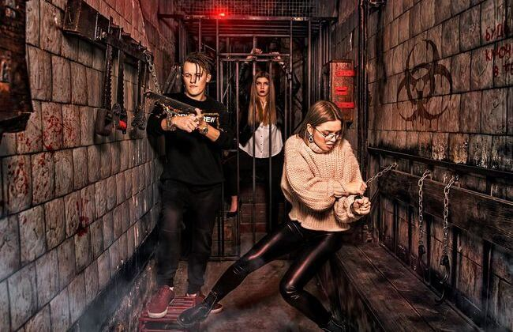
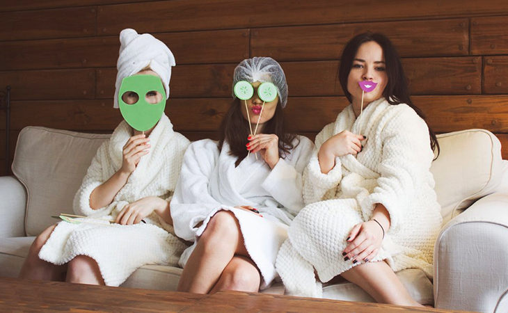
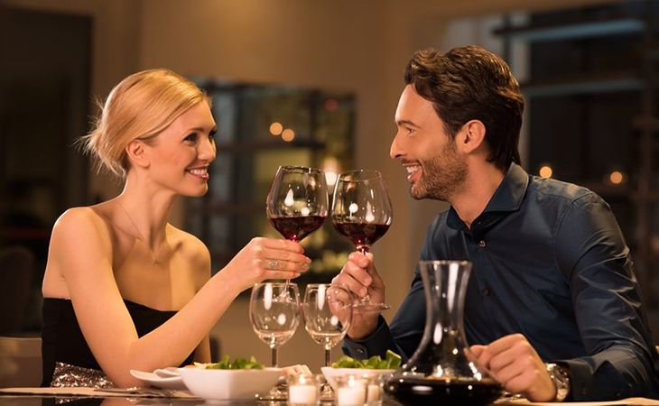
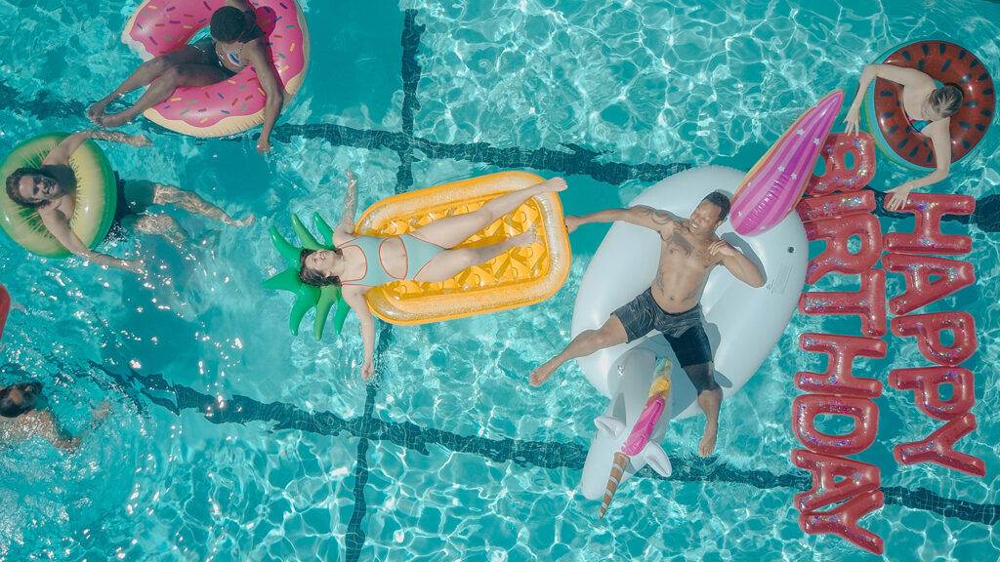

Як оригінально і незвичайно відзначити день народження: топ ідей
Питання як цікаво відсвяткувати день народження, особливо якщо це ювілейна дата, постає щороку, і кожного разу хочеться відзначити його оригінально, краще, ніж попередній. Особливо чекають свята діти, але й дорослі не проти круто повеселитися і зарядитися позитивом.
Квест-кімнати
Такий варіант святкування підійде всім, хто любить логічні ігри та гострі відчуття. Зазвичай все відбувається так: вас разом із друзями замикають у приміщенні та пропонують розгадати загадку, щоб вибратися/врятувати світ/розкрити злочин. Це захоплюючі враження щодо відносно невелику суму
Лазня, сауна, spa
А може на своє свято ви хочете провести день, повний релаксу і задоволення, подарувати собі і гостям відчуття легкості і бадьорості? Тоді SPA – відмінний варіант, як для дівчат, так і для хлопців. Залежно від ваших бажань і бюджету доступно кілька варіантів проведення такого дня народження: у сауні (в більшості лазень може вміститися компанія до 8-14 осіб) або ж у спа комплексі, де заразом пропонують косметичні і масажні послуги.
Кіновечірка
Цікаві фільми, відро гарячого попкорна і компанія близьких людей – рецепт приємного святкування іменин для дітей і дорослих. Все, що вам потрібно зробити – це визначитися з фільмом і забронювати квитки. Крім традиційного перегляду кіноновинок можна вибрати чіл на пляжі в кінотеатрі під відкритим небом або яскраві емоції від короткометражки з реальними спецефектами – рухомим кріслом, бризками води і вітром
iДень народження в ресторані
На честь дня народження в ресторані можна влаштувати і великий банкет, і романтичну вечерю на двох, і затишні посиденьки в колі сім’ї. У Києві, Харкові, Львові, Дніпрі та інших містах України величезна кількість кафе і ресторанів. Європейська, східна, українська кухня – на будь-який смак і гаманець. Щоб відчути всю унікальність цього дня, можна завітати у новий для вас заклад ? Насолоджуйтесь спілкуванням і хорошою їжею – з Pokupon ви можете дозволити собі більше!
Аквапарк
Якщо у вашому місті є аквапарк, то ви маєте шанс відзначити ваше особисте свято яскраво, весело та активно. Це незвичайне рішення, яке гарантує хороший відпочинок для всіх гостей, незалежно від статусу і віку. Поки діти плескаються на гірках і в басейні, дорослі можуть насолодитися чудовим джакузі. Вечірка в аквапарку пройде добре незалежно від погодних умов – ви можете як слід повеселитися навіть восени в дощовий день або посеред зими.
ДН на концерті
Можна грати в боулінг і більярд, а можна слухати хорошу музику разом з друзями і як слід запалити на танцполі. Немає можливості замовити відому групу для вечірки? Можливо, в цей самий день один з ваших улюблених артистів дає концерт. Купуйте квитки заздалегідь і відривайтесь під улюблену музику по повній.